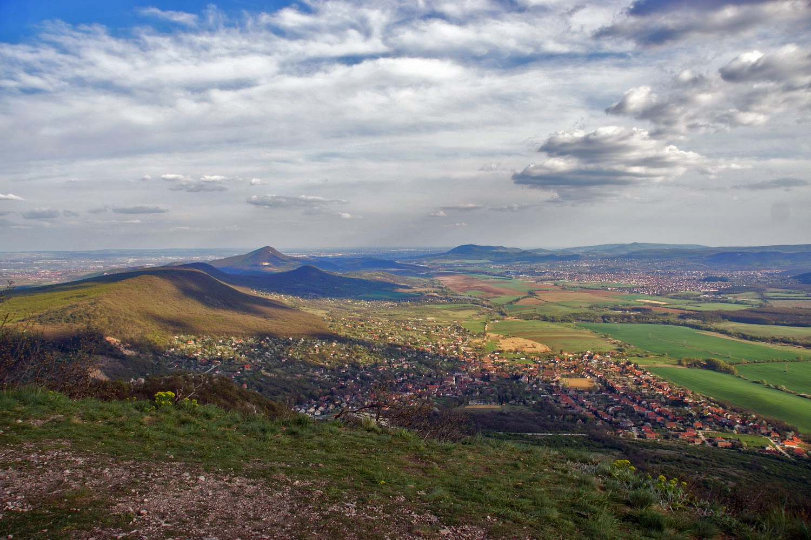
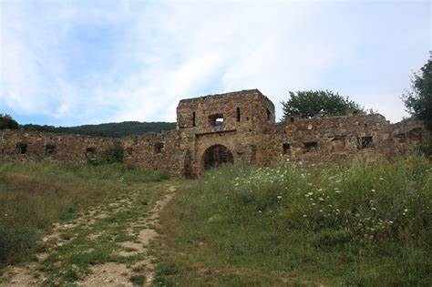
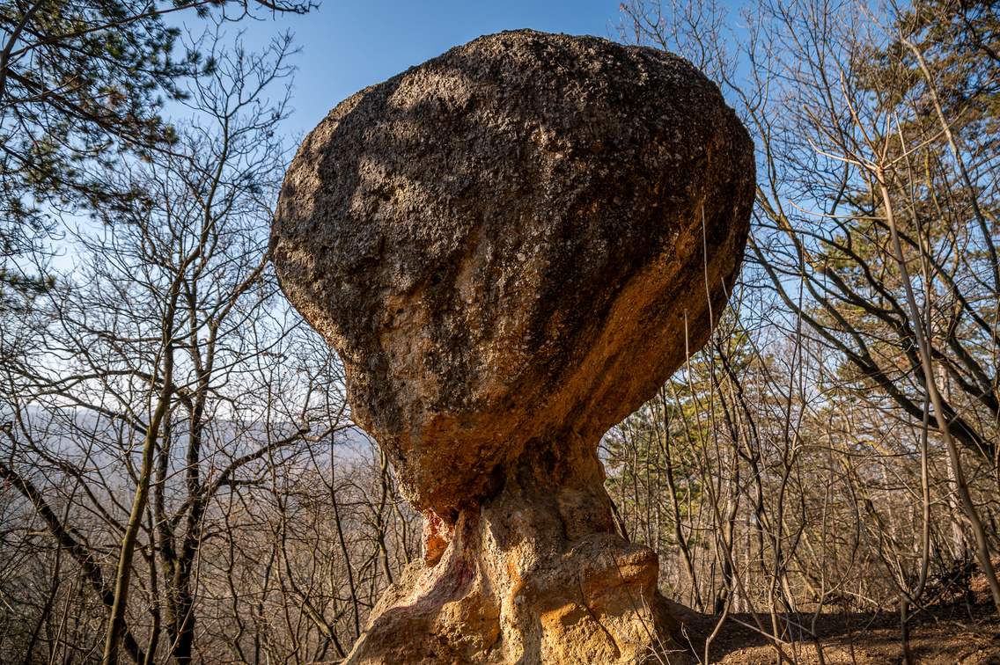

Útvonal: Pilisvörösvár felőli érkezés esetén Pilisszántón keresztül kell menni és a buszforduló után balra található parkolóban érdemes az autót letenni. Innen a műúton Pilisszentkereszt irányába vezet az út , majd pár száz meter megtétele után a balra található piros turista jelzést kell követni. Az út elhalad az Orosdy-kastély és a Magas -hegy (409 m) mellett. A kereszteződéshez elérve a zöld jelzés vezet először a László kúpjához, majd a Pilis-tetőhöz, érintve a Trézsi forrást is. A Pilis vagy Pilis-tető 756 m-es tengerszint feletti magasságával a Pilis hegység, egyúttal a Dunántúli-középhegység legmagasabb hegycsúcsa. Kedvelt kirándulóhely. Mészkő alkotta vonulatának keleti oldalában található a Vaskapu.
Pilis Tető
Egri Vár Replika
Az egri vár másolata a Pilisben, a Nagy-Kevély délnyugati lejtőjén, Pilisborosjenő határában fekszik, közel a Teve-sziklához és az Országos Kéktúra útvonalához. A várat az Egri csillagok című film forgatásához építették az 1960-as években. Várkonyi Zoltán filmrendező a látványos, több ezer statisztát felvonultató csatajelenetekhez választotta a Pilisborosjenő és Csobánka között húzódó völgyet a film egyik helyszínéül. A forgatások alatt a nagyrészt fából készült vár egy része leégett, de rögtön újjá is építették. A film elkészülte óta magára hagyatva pusztul. A forgatás 40. évfordulójára 2008 nyarán a vár környékét a Pilisborosjenői Önkormányzat rendbe hozatta.
Gomba Szikla
A cseh-lengyel határ menti homokkővilág lengyelországi oldalán, az Asztal-hegység (Góry Stołowe) Nemzeti Park egyik természeti látványossága, a Skalne Grzyby (Szikla Gombák) nevű, fenyőerdővel borított terület, melynek jellemzői a sűrű fenyvesben megbújó bizarr alakú sziklaformációk. Az erózió hatására főleg kalapos gombákra emlékeztető 5-6 m magas homokkőalakzatok közt kényelmesen kanyargó, hangulatos turistautakon fedezhetjük fel e nem mindennapi tájat.
